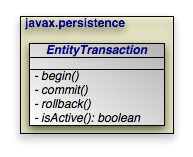

2.9.2. The EntityTransaction Interface

JPA integrates with your container’s managed transactions, allowing you to use the container’s declarative transaction demarcation and its Java Transaction API (JTA) implementation for transaction management.
Outside of a container, though, you must demarcate transactions manually through JPA.
The EntityTransaction interface controls unmanaged transactions in JPA.
public void begin();
public void commit();
public void rollback();
The begin, commit, and rollback methods demarcate transaction boundaries.
The methods should be self-explanatory: begin starts a transaction, commit attempts to commit the transaction’s changes to the datastore, and rollback aborts the transaction, in which case the datastore is "rolled back" to its previous state.
JPA implementations will automatically roll back transactions if any exception is thrown during the commit process.
Unless you are using an extended persistence context, committing or rolling back also ends the persistence context.
All managed entities will be detached from the EntityManager.
public boolean isActive();Finally, the isActive method returns true if the transaction is in progress (begin has been called more recently than commit or rollback), and false otherwise.
public void transferFunds(EntityManager em, User from, User to, double amnt) {
// note: it would be better practice to move the transaction demarcation
// code out of this method, but for the purposes of example...
Transaction trans = em.getTransaction();
trans.begin();
try
{
from.decrementAccount(amnt);
to.incrementAccount(amnt);
trans.commit();
}
catch (RuntimeException re)
{
if (trans.isActive())
trans.rollback(); // or could attempt to fix error and retry
throw re;
}
}